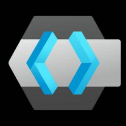
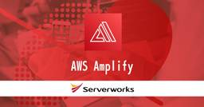

サーバーワークスエンジニアブログ
https://blog.serverworks.co.jp/
クラウド専業インテグレーター・サーバーワークスの中の人があらゆる技術についてお届けします。
フィード

【Amazon Connect】Amazon Connect コンタクトイベント利用時の注意点
サーバーワークスエンジニアブログ
Amazon Connectのコンタクトイベント（通話イベント）は、特別な設定なしで、ほぼリアルタイムでEventBridgeへ配信される便利な機能です。 Amazon EventBridgeのルール設定をすることで、イベントに応じた機能を実装することが可能です。 概要 注意点 ベストエフォート配信である イベントタイプ追加を考慮 最後に 概要 機能自体は過去にも紹介していますが、利用における注意点を記載します。 過去の記事 blog.serverworks.co.jp 注意点 ベストエフォート配信である イベントはベストエフォート、つまり確実に送信されることが保証されていません。 確実に処理…
14時間前

EC2のパブリックDNS名がIPv6をサポートしました
サーバーワークスエンジニアブログ
AWSがEC2のDNS設定を強化！IPv6アドレスサポートにより、デュアルスタックオプションが利用可能に。すべてのサービスリージョンでこの機能にアクセス可能です。
16時間前

AWSの機械学習（Machine Learning）系 ２つの資格の短いガイド
サーバーワークスエンジニアブログ
こんにちは。エデュケーショナルサービス課の井澤です。 近年では、すっかり生成AIに注目が集まっています。ですが、依然として（生成AIではない）機械学習が企業の問題解決に役立つ場面は多いです。 AWSは、機械学習に関わるサービスを多数提供しており、その知識や技能を問う資格試験が２つあります。 aws.amazon.com aws.amazon.com この短い記事では、２つの資格の違いと、共通点を紹介します。 以後、試験のコードに合わせて前者をMLA、後者をMLSと表記します。機械学習（Machine Leaning、ML）のAssocisate と、Specialtyということですね。 ※なお…
1日前

【マルチアカウント環境】SSMを利用したOSアクセスの統制について
サーバーワークスエンジニアブログ
こんにちは。AWS CLIが好きな福島です。 はじめに 今回は、SSMを利用したOSアクセスの統制について検討する機会があったため、ブログにまとめたいと思います。 はじめに 構成 初期セットアップ 運用イメージ 補足 試してみる ①SCPの設定 ②SCPの動作確認 ターミナルセッション接続 リモートデスクトップ接続 ③OSAccessのIAMロールの作成 ④OSAccessの動作確認 ターミナルセッション接続 リモートデスクトップ接続 ⑤OSAccessへのスイッチロールの制御 終わりに 構成 初期セットアップ ①IAM Userを1つのAWSアカウントに集約し、スイッチロール形式で各AWSア…
1日前

VS CodeでMCP Server（プレビュー版）：設定ファイルの書き方で生じる微妙な違い
サーバーワークスエンジニアブログ
こんにちは。 アプリケーションサービス部、DevOps担当の兼安です。 AWSから発表されたMCP ServerをVisual Studio Code(以下、VS Code)で試したところ、設定の仕方で微妙な違いが現れることに気づいたので書かせていただきます。 本記事のターゲット 本記事の注意事項 VS CodeのMCP Server（プレビュー版）とは MCP Serverの設定をフォルダの.vscode/mcp.jsonに記述した場合 VS Codeで複数フォルダを開いた場合 MCP Serverの設定をフォルダの.vscode/settings.jsonに記述した場合 MCPの設定を.v…
2日前
Cursor における各プランのPrivacy Modeとデータ保護について
サーバーワークスエンジニアブログ
はじめに 生成 AI 統合 IDE「Cursor」は VS Code をベースに、ChatGPT や Claude など複数モデルを扱える統合開発環境です。一方、利用時にソースコードやプロンプトがクラウドに送信されるため、どのプランでどこまで守られるのかが導入判断の焦点になります。 2025 年 5 月に Cursor 社 Cursor Security Teamとメールでやり取りし、Free、Pro でも Privacy Mode を有効にすれば Business と同等のゼロ保持保証が得られることを確認しました。本記事では、そのメール内容と公式セキュリティページの情報をもとに、プランごとの…
3日前
【DeepDive】New Relicネットワーク監視(NPM)の設定値の挙動についての検証結果
サーバーワークスエンジニアブログ
New Relicのネットワーク監視における設定ファイル snmp-base.yaml の設定値の影響について、実際の動作検証をもとに解説。globalセクションとdevicesセクションのポーリング間隔（interval_sec）について設定時の挙動について深堀しました。
3日前
セキュリティ向上を実現！AWSジャストインタイムノード機能の紹介
サーバーワークスエンジニアブログ
AWS Systems Managerの新機能により、ジャストインタイムでノードへのアクセスを実現。許可セット作成や承認ポリシーの設定方法を解説。
7日前
【実践編】New Relicのネットワーク監視(NPM)でSyslog監視
サーバーワークスエンジニアブログ
New RelicのNetwork Performance Monitoring(NPM)を用いたsyslogの取り込み設定や設定時の注意点、検証内容について解説。
7日前

Keycloakを利用してActive Directoryの特定のグループだけアクセスを許可するWebページを作る 1
1
サーバーワークスエンジニアブログ
Keycloakを利用し、Active Directoryの特定のグループだけアクセスを許可するWebページを、Web側の改修なく実施する方法を紹介しています。
8日前

【初心者向け】AWS Amplify Gen2 入門——何が嬉しいのかをざっくりと理解しよう
サーバーワークスエンジニアブログ
こんにちは。アプリケーションサービス本部ディベロップメントサービス2課の濱田と申します。 コーラはペプシ派、犬はビーグル派です。 さて、本記事は「AWS Amplify ってサービスが気になるけれど、結局何をしてくれるサービスなのかよくわからないな」という方向けに、「AWS Amplify Gen2 入門——何が嬉しいのかざっくりと理解する」と題して、以下2点のことをお伝えします。 Amplify 入門の壁・注意点 Amplify(Gen2) というサービスがあると何が嬉しいのか どなたかのお役に立てば幸いです！ Amplify 入門の壁・注意点 1. 守備範囲が広い 2. Gen2の日本語ネ…
8日前
AIエージェント開発が簡単に！AWS「Strands Agents」のご紹介
サーバーワークスエンジニアブログ
本記事では、AIエージェントの構築と実行を簡素化するAWSの新しいオープンソースSDK「Strands Agents」をご紹介します。 ※AWSが公開したブログも合わせてご参照ください。 aws.amazon.com Strands Agentsの登場背景 初期のLLM（大規模言語モデル）を使用する従来のAIエージェント開発では、タスク実行のためにどの機能をどの順番で呼び出すかといった、いわゆる「オーケストレーション」ロジックを開発者が細かく設計する必要がありました。 しかし、最近のLLMは推論能力やツール連携機能が飛躍的に向上しています。 Strands Agentsは、この進化したLLMの…
8日前

AWS CDK のスナップショットテストで AWS Step Functions の ASL 差分が見づらい問題の対応を考える
サーバーワークスエンジニアブログ
はじめに 対象読者 最初に結論 課題 対応策 新たな課題 対応策（改） おわりに はじめに サーバーワークスの宮本です。今回は AWS CDK で AWS Step Functions を構築する場合に発生するちょっとした問題の対応について考えてみました。 対象読者 AWS CDK を TypeScript で書いている人 Step Functions を扱っている人 スナップショットテストを導入している人 最初に結論 以下ページを参考にセットアップしていただくと Step Functions の定義部分 (ASL) のスナップショット差分がいい感じに出力されるようになります。（一部課題あり）…
9日前
【Amazon Connect】CCP オーディオの問題：対応方法の具体的手順（Windows）
サーバーワークスエンジニアブログ
Amazon Connectのソフトフォンの通話音声トラブル対応方法としてWindowsの設定を変更して対応する内容が公開されています。 具体的な設定手順を紹介します。 概要 注意 手順 1. qWAVE 2. SstpSvc 3. RasMaAn 4. ndisuio.sys 5. dmwAppushSvc Windowsを再起動します 関連リンク 最後に 概要 Amazon Connectのソフトフォン（以下CCP）はWebブラウザを使用します。 Google Chrome/Microsoft Edgeを使用した場合の通話音声トラブルの原因・対処方法が下記ドキュメントページへ記載されていま…
10日前
ISOインポート機能でAMIを作成してみた
サーバーワークスエンジニアブログ
はじめに EC2 Image BuilderでISOからAMIを作成する機能が追加されたので、使ってみました！ 利用方法をまとめてみたので、参考にしてください。 アップデート記事 https://aws.amazon.com/jp/about-aws/whats-new/2025/01/ec2-image-builder-converting-windows-iso-files-amis/ 利用方法 対象OS Windows11が対象となります。 事前準備 Windows11のISOファイルをS3にアップロードする S3上のISOファイルを読み込むので、イメージを作成するAWSアカウント上にS…
10日前
Amazon Bedrockのプロンプト最適化を試してみた
サーバーワークスエンジニアブログ
こんにちは、近藤（りょう）です！ 生成AIの活用が広がる中で、回答の精度を高めるうえでプロンプトの最適化は非常に有効だと思います。 効果的なプロンプトを設計するには、それなりの知識や経験、多くの試行錯誤が必要ですぐにできるというわけではありませんが、Amazon Bedrockのプロンプト最適化 を利用することで AI がプロンプトを自動的に生成してくれるので、専門知識がなくても、気軽に短時間で質の高いプロンプトを用意できます。 さらに、質の高いプロンプトは、無駄な出力を減らすことで使うトークン数も抑えられるので、コスト面でもうれしいポイントです。 プロンプト最適化とは？ プロンプト最適化のコ…
10日前
S3に集約したログをセキュアに各アカウントのコンソールから閲覧させる方法
サーバーワークスエンジニアブログ
こんにちは。AWS CLIが好きな福島です。 はじめに マルチアカウントが主流である昨今、ログをS3に集約することが多いかと存じますが、 利便性を損なわないよう、各アカウントからもログを確認できるようにしたいというニーズがあるかと思います。 ということで今回は、S3に集約したログをセキュアに各アカウントのコンソールから閲覧させる方法を考えてみました。（各アカウントからAthenaを使った分析も可能です。） ブログでは、ELBを前提にしていますが、他のサービスでも同様のことができるかと思います。 補足 集約したログを各アカウントから確認する方法は、AWSサービスによって他のアプローチも考えられま…
10日前
メインロジックを Lambda 関数にオフロードする AWS Lambda MCP Server を試す
サーバーワークスエンジニアブログ
はじめに 本記事では、エージェント機能を持つ Amazon Q for command cli を使用して、AWS Lambda MCP Server 試す一連の流れを紹介します。 awslabs.github.io 上記サイトでも紹介されているように、AWS Lambda MCP Server を使用することで、単体の MCP サーバーに複数の Lambda 関数を関連付けることができます。これにより、以下の観点でメリットを享受できると述べられています。 観点 メリット セキュリティ MCP サーバーが直接呼び出す AWS サービスは Lambda のみで、AWS 認証情報に紐づく権限を最小…
10日前
システム開発の工程について整理してみた
サーバーワークスエンジニアブログ
はじめに 全体の流れ 1. 要件定義 1.1. 主な実施内容 1.2. 成果物例 2. 基本設計 2.1. 主な実施内容 2.2. 成果物例 3. 詳細設計 3.1. 主な実施内容 3.2. 成果物例 4. 実装 4.1. 主な実施内容 4.2. 成果物例 5. 単体テスト 5.1. 主な実施内容 5.2. 成果物例 6. 結合テスト 6.1. 主な実施内容 7. システムテスト 7.1. 主な実施内容 7.2. 成果物例 8. 検収 8.1. 主な実施内容 8.2. 成果物例 まとめ はじめに こんにちは、アプリケーションサービス本部 ディベロップメントサービス1課の北出です。 中途入社して…
11日前
【New Relic】New Relicで実現！ クラウド/SaaSサービスの 障害情報を一元管理
サーバーワークスエンジニアブログ
New Relicの『Status Pages』機能を使って、クラウド環境やSaaSサービスのインシデント管理を効率化。設定手順も解説。
13日前
Cline利用規約の適用範囲が明確に - 外部API利用時は適用外であることが公式回答で判明
サーバーワークスエンジニアブログ
先日公開したブログ記事「Cline利用におけるデータの取り扱いについて」には、多くの皆様から反響をいただきました。誠にありがとうございます。 blog.serverworks.co.jp icoxfog417（GitHubアカウント名）様がCline社に対して直接、ライセンスと利用規約の明確化を求める問い合わせを行っておりました。 github.com GitHub IssueでのCline社からの回答により、特に外部APIを利用する際のClineの利用規約の適用範囲について、重要な確認が取れましたので、本記事で詳しくお伝えします。 今回明らかになった重要なポイント 結論からお伝えすると、以下…
13日前
【AWSサービス別】 S3へのログ集約時のバケットポリシーについて
サーバーワークスエンジニアブログ
こんにちは。AWS CLIが好きな福島です。 はじめに マルチアカウントが主流である昨今、監査や分析を目的にログをS3に集約することが多いかと存じます。 単一のAWSアカウントから各種AWSサービスのログをS3に出力する際のバケットポリシーについては、AWSのドキュメントに記載がありますが、 複数のAWSアカウントからログを集約する際のバケットポリシーは、アレンジが必要な場合が多いです。 そのため今回は、複数のAWSアカウントから各種AWSサービスのログをS3に集約する際のバケットポリシーについて、まとめてみました。 はじめに 前提 ガバナンス系 CloudTrail Config 補足：Co…
14日前
Cloud NGFW for AWSの基本構成と料金について
サーバーワークスエンジニアブログ
パロアルトネットワークスのフルマネージド次世代ファイアウォールサービスであるCloud NGFW for AWSの導入、コスト構造、高度なセキュリティ機能についてご紹介します。
15日前
社内向けおすすめ本紹介プラットフォーム「さばわの本棚」を支える技術
サーバーワークスエンジニアブログ
サービス開発部のくればやしです。 今回、社内向けおすすめ本紹介プラットフォーム「さばわの本棚」の運用をはじめたので、それらの背景と採用技術について紹介します。 背景など 社員同士でおすすめ本の紹介をすることはよくありますよね。これまで多くの場合はSlackや各種MTG等で個別に紹介されることが多かったのですが、それらだと流れていってしまうので、どこかに情報をまとめておきたいなと思っていました。 社内で既に様々な用途で利用しているWiki的なサービスもあるのですが、おすすめ本の情報を整理しておくには物足りないなと感じていました。（個人的に本は表紙（装丁）も含めてコンテンツだと思うのですが、それら…
15日前
AppStream 2.0 で IAM Identity Center を SAML 2.0 IdPとして利用する 〜 (4) フェデレーションまわりの設定
サーバーワークスエンジニアブログ
はじめに こんにちは、ドウミョウ と申します。 AppStream 2.0 の認証先として、IAM Identity Center を利用する検証を行ってみました。 何回かに分けて、実構築の模様をお届けします。 １）はじめに ２）Amazon AppStream 2.0 の基本環境構築 ３）AWS IAM Identity Center の基本環境構築（有効化、基本設定、ユーザ登録） ４）フェデレーションまわりの設定 細かいチューニングは別途で行う前提で、 基本的な環境を構築し、フェデレーション設定を終わらせることをゴールとします。 本ポストでは 本ポストでは、実際に IAM Identity…
16日前
AppStream 2.0 で IAM Identity Center を SAML 2.0 IdPとして利用する 〜 (3) IAM Identity Center の基本環境構築
サーバーワークスエンジニアブログ
はじめに こんにちは、ドウミョウ と申します。 AppStream 2.0 の認証先として、IAM Identity Center を利用する検証を行ってみました。 何回かに分けて、実構築の模様をお届けします。 １）はじめに ２）Amazon AppStream 2.0 の基本環境構築 ３）AWS IAM Identity Center の基本環境構築（有効化、基本設定、ユーザ登録） ４）フェデレーションまわりの設定 細かいチューニングは別途で行う前提で、 基本的な環境を構築し、フェデレーション設定を終わらせることをゴールとします。 本ポストでは 本ポストでは、IAM Identity Cen…
16日前
AppStream 2.0 で IAM Identity Center を SAML 2.0 IdPとして利用する 〜 (2) AppStreamの基本環境構築
サーバーワークスエンジニアブログ
はじめに こんにちは、ドウミョウ と申します。 AppStream 2.0 の認証先として、IAM Identity Center を利用する検証を行ってみました。 何回かに分けて、実構築の模様をお届けします。 １）はじめに ２）Amazon AppStream 2.0 の基本環境構築 ３）AWS IAM Identity Center の基本環境構築（有効化、基本設定、ユーザ登録） ４）フェデレーションまわりの設定 細かいチューニングは別途で行う前提で、 基本的な環境を構築し、フェデレーション設定を終わらせることをゴールとします。 本ポストでは 本ポストでは、AppStream 2.0 の基…
16日前
AppStream 2.0 で IAM Identity Center を SAML 2.0 IdPとして利用する (1) はじめに
サーバーワークスエンジニアブログ
はじめに こんにちは、ドウミョウ と申します。 AppStream 2.0 の認証先として、IAM Identity Center を利用する検証を行ってみました。 何回かに分けて、実構築の模様をお届けします。 １）はじめに ２）Amazon AppStream 2.0 の基本環境構築 ３）AWS IAM Identity Center の基本環境構築（有効化、基本設定、ユーザ登録） ４）フェデレーションまわりの設定 細かいチューニングは別途で行う前提で、 基本的な環境を構築し、フェデレーション設定を終わらせることをゴールとします。 本ポストでは 本ポストでは、環境構築にあたっての前提条件や、…
16日前
【AWS Systems Manager の新しいエクスペリエンス】(2) ジャストインタイムノードアクセス (JITNA) を試す (1)
サーバーワークスエンジニアブログ
こんにちは、AWS サポート課（旧テクニカルサポート課）の坂本（@t_sakam）です。今回も、前回に続いて AWS Systems Manager (SSM) の新しいエクスペリエンス（= 統合コンソール）についてのブログです。 はじめに 前回のブログのあと、2025/4/29 に新しいエクスペリエンスを有効化した環境で利用が可能な「ジャストインタイムノードアクセス (Just-in-Time Node Access / JITNA)」という要注目の機能が発表されました。そのため、AWS Systems Manager の新しいエクスペリエンスシリーズ第 2 回の今回は、予定を変更し「ジャス…
16日前
Cline利用におけるデータの取り扱いについて
サーバーワークスエンジニアブログ
【2025年5月16日追記】 利用規約について、Cline社からの回答により適用範囲が明確となりました。 以下の記事も合わせてご覧ください。 blog.serverworks.co.jp 【2025年5月16日追記ここまで】 これまでClineに関するブログ記事をいくつか公開し紹介してきました。 今回、利用規約の変更に伴うユーザーデータの取り扱いについて懸念が生じたため、本記事ではClineの利用規約の中でも特に注意すべき点と、弊社の対応についてご説明します。 Cline利用規約の変更点とデータ収集のリスク Clineの利用規約 (https://cline.bot/tos 更新日: 2025…
16日前